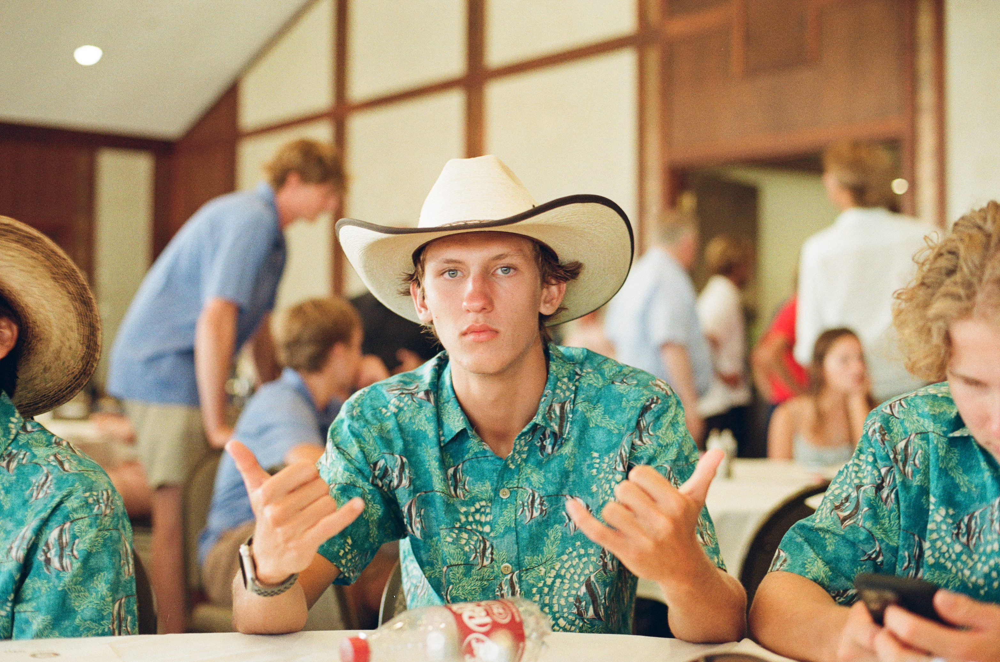

Design & Drawing
Translating concepts into detailed engineering drawings with proper dimensioning, tolerancing, and GD&T callouts ready for manufacturing.

Hello, my name is Joshua Sadler and I am a Second Year Mechanical Engineering student at CSU with a Minor in Mathematics. I enjoy learning and am fascinated with how we can model and solve real world problems using math and engineering. My skills range across CAD design, composite fabrication, manual machining and coding with Arduino IDE and MATLAB.
In my free time I enjoy surfing, hydrofoiling, sailing and skiing. In the last year I have worked with Unifoil, a hydrofoiling company, developing product testing technology to improve hydrofoil designs. I deeply enjoy this type of engineering that connects the theoretical design to real world performance especially in sports that harness the power of the earth to function.
Translating concepts into detailed engineering drawings with proper dimensioning, tolerancing, and GD&T callouts ready for manufacturing.
Hands-on experience with layup techniques, curing processes, and quality control for high-performance composite structures.
Operating and programming CNC and manual machines to produce precision parts from raw stock to finished product.
A precision-engineered clock with detailed manufacturing drawings and full GD&T analysis.
Read the case studyA short, intriguing one-line description of the project. Hint at the problem, the audience, and the texture of the work.
Read the case studyA short, intriguing one-line description of the project. Hint at the problem, the audience, and the texture of the work.
Read the case studyI'm always open to new opportunities, collaborations, or just a good conversation. Feel free to reach out.